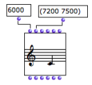

Instantiating Objects
An instance is an exemplar of a class of objects. Instantiation is the process of creating an instance of a class using a factory box.
A factory box has a number of slots, represented by inputs and outputs. Once values are assigned to the slots or parameters of a factory box, it can be evaluated to produce an instance[1], an exemplar of a class.
- The first input and output always correspond to the object that is created by the box. It is called the "self" of the box.
- Each of the other inputs and outputs stands for an attribute, or parameter of the object – a slot[2] of the corresponding class[3].
Note that the value of a factory box can also be defined via its editor.
First Input / Output : "Self"
 | The first input / output of a factory box is usually called "self". It stands for the object itself. A "self" input can be connected to :
Reciprocally, the evaluation of a "self" output, or its connection to another box returns the computed object itself. |
When compatibility allows it, OM automatic converts objects of a diferent type and creates an instance of the relevant class.

The merger function builds a chord-sequence, or chord-seq[4] , out of two other chord-sequences given as arguments[5].
 |
|
The two initial chord-seqs are locked to preserve their value. Conversely, the box that is to be evaluated isn't locked, to take the result of the upstream computation into account.
To evaluate a box, select it and press Its value is computed, and the result of the "self" output, that is, the internal representation of the resulting instance[1] is displayed in the Listener. |  |
To reset a box to its default state, press SHIFT + i .
Other Inputs / Outputs : Object Parameters
The other inputs and outputs represent the various parameters (also called class slots[2]), used for defining an instance.
Inputs and outputs respectively address the same parameters – and follow the same ordering.

To get information about the qualities of a slot, keep pressing Cmd while overing the mouse over an input or output.
 Building a chord with two of its parameters : a list of pitches (6000 6800) for C4 and G#4, and a list of note velocities – dynamics – (100 50). | Input values must be specified to define an object. Several parameters can be set or connected at a time. If no value is specified, the default value of the input is applied. |
An object can be created directly from the "self" input value, and from the other input parameters. By convention, "self" has priority over the other inputs, whose values are ignored. |  Different values have been assigned to the "self" and "pitch" inputs. The value of the "self" input is applied for the instantiation. |
The different outlets of an object can be used for reading the values of its attributes. Outputs can be connected as parameters to other factory or function box inputs.
To evaluate the value of an output, Cmd click on it. The whole box is evaluated and a specific instance of the class is created.
The second input represents the pitch value of a note box.
|  |
- Instance
An actual object created at runtime, out of a given class. In OM, more specifically, an object created when evaluating a factory box. An instance can be saved as a global variable.
⤷
SHIFTclick on an outlet – especially the first outlet representing the self, the whole object – of a factory box to materialize an instance. - Slot
In object oriented programming, a slot represents and attribute of a class. For instance, the class "note" in OM has 4 slots : pitch, duration, velocity, and MIDI channel.
- Class
A category of objects sharing common properties – characteristics and behaviour. A class specifies the internal structure and behaviour of an object. In OM, it is represented in a patch by a factory box that can produce an instance of a class.
See also : Object, Instance
- Chord-Seq
OM name of a chord sequence. By extension, a note sequence, since a single note can be considered a chord.
- Argument
An argument represents a parameter upon which a function operates. For instance, the (om+ x y) function has two arguments : x and y.
- OpenMusic Documentation
- OM 6.6 User Manual
- Introduction
- System Configuration and Installation
- Going Through an OM Session
- The OM Environment
- Visual Programming I
- Visual Programming II
- Basic Tools
- Score Objects
- Maquettes
- Sheet
- MIDI
- Audio
- SDIF
- Lisp Programming
- Errors and Problems
- OpenMusic QuickStart